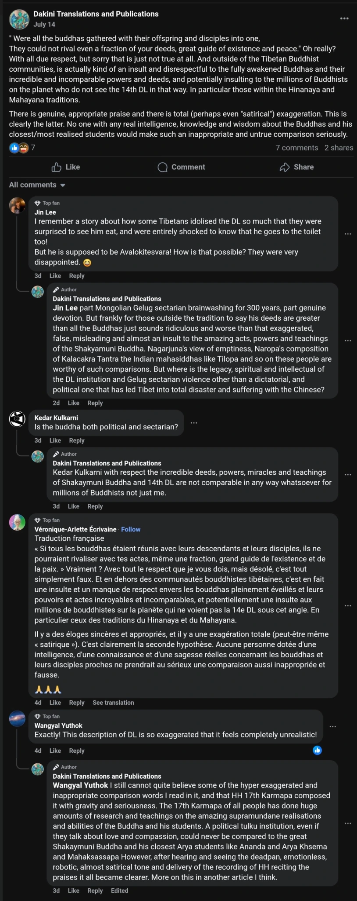
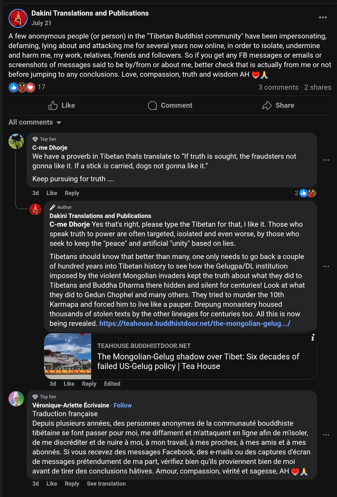
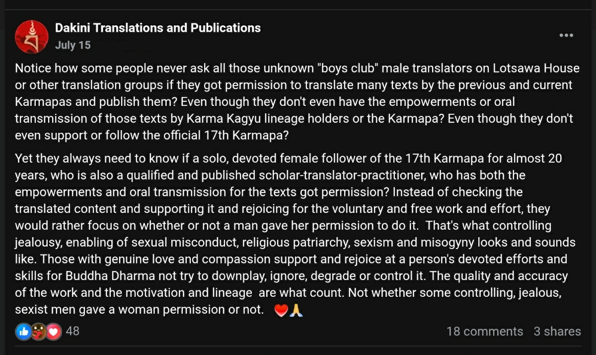
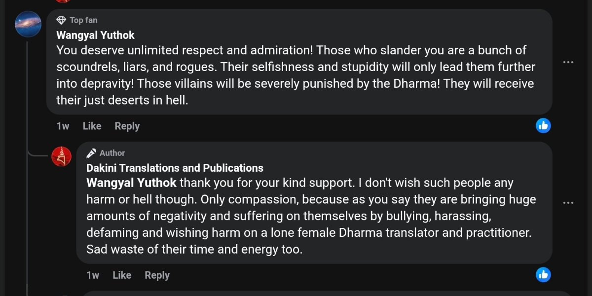

Pitting the Karmapa Against the Dalai Lama: Dakini Translations’ Mission Decoded
Disclaimer: This content critiques the publicly shared activities of Adele Tomlin (Dakini Translations and Publications) in good faith to protect the integrity of Vajrayana teachings. It is based on verifiable evidence and offered for educational purposes under U.S. free speech and fair comment protections, not as a personal attack. We welcome Adele or others to clarify or respond in good faith, fostering constructive dialogue.
You think you’re reading the Karmapa?
No, you’re not. You’re reading her projection. Filtered. Paraphrased. Rewritten by Adele Tomlin. Every word she touches carries incongruence: devotion on the surface, poison underneath. She doesn’t translate. She rewrites. She reframes, infecting every word with her “personal observations,”[1] her duplicitous commentary, her obsessions, her moral lectures, her emotional debris. By the time you reach the Karmapa’s message, you’re not hearing him. You’re hearing her, as the counterfeit Karmapa. She never quotes his real voice. Never directs you to the Karmapa’s websites, but her own Dakini Translations website. Why? Because it is never about the Karmapa. It’s always about Adele Tomlin, layering perfidious interpretations to eclipse him.
How far can she possibly go in editing the Karmapa? How about she interprets him through the presumption of guilt[2]? As if every word hid a flaw, every silence concealed scandal, every gesture demanded correction. Court allegations become her “facts.” Rumors are elevated to “truth.” She drags the Karmapa’s voice through her swamp of deceitful projection until teachings sound like accusations and blessings look like traps. How is this still called translation? It’s character assassination disguised as devotion.
Does Adele Tomlin follow Vajrayana?
No. She obliterates Vajrayāna. The Karmapa is her gateway. The Dalai Lama is her target. And you, are the pawns she ensnares to fight her manufactured wars.[3] The performance of loyalty masks the incongruence of betrayal. Every piece of writing positions Adele Tomlin not as a follower, not as a translator, but as the self-appointed judge of the guru. She twists the Karmapa’s words as if he were always guilty, always in need of her corrections, her judgments, her superior lens. She hijacks the blessing, strips the symbolic power, and parades his words like stolen trophies. You don’t meet the Karmapa – you meet her correction of him. And she denigrates him again. And again. And again. It’s an endless cycle of treacherous self-aggrandizement – a direct desecration of the dakini principle, for while a true dakini protects and amplifies the guru, Adele’s “Dakini Translations” brand exists only to outshine, overshadow, and replace him.
How does Adele Tomlin view the Dalai Lama?
She no longer hides her malevolence toward the Dalai Lama.[4] It is militant — the behavior of a mind so rotten and perverse that no decent human, let alone a Buddhist, would act with such virulence. She mocks devotional praise to the Dalai Lama as ‘insulting’ and ‘inappropriate’ even when those words come directly from the 17th Karmapa himself. She twists the Karmapa’s voice into weapons and presents her vindictiveness as “truth.” When the Karmapa speaks of the Dalai Lama with reverence, she calls it weakness. When he praises the Dalai Lama, she twists it into satire. She projects her enmity onto the very figures she pretends to serve. And she frames this outright transgression proudly as honesty, as if overthrowing the Dalai Lama were the purest way to serve the Karmapa and the Tibetan community. Adele’s duplicitous, corrosive propaganda neither protects nor preserves the Karmapa or the Kagyu lineage. It erodes every lineage by severing the spine of Tibetan unity. How can this be called loyalty when it’s clearly insidious sectarian sabotage wearing the mask of devotion?
She even shames sacred rituals, claiming that any long-life prayers for the Dalai Lama are proof of “Gelugpa domination” and of the neglect of other masters. She goes further, ridiculing the very wish for any gurus’ long life as “unnatural” and “unethical.”[5]
In Vajrayāna, where wishing for the gurus’ long life is an indispensable core of the Seven-Branch Offerings, included within the Samantabhadra’s King of Aspiration Prayers[6], her condemnation is a direct violation of the heart of Dharma. Gurus are the irreplaceable sources of blessings; without gurus, there is no Dharma left to survive.
To deride the wish for a guru’s long life, to sneer at praise for the Dalai Lama, is nothing but a calculated strike against the continuity of blessing and the unbroken lineage of awakening. Her contempt for the Dalai Lama and Gelugpa is not personal rancor, it is sectarian treason and existential sabotage[7], designed to fracture Tibetan unity and hollow out Vajrayāna from within. If the Dalai Lama’s authority fractures, the Tibetan diaspora risks disintegration, and Vajrayāna itself loses its coherence. Who benefits from this? Not practitioners. Not Tibetans. Only those who thrive on division, sectarian predators, political opportunists, and any entities that want Tibetan Buddhism broken beyond repair.
Adele Tomlin, who parades as a “brave lone woman speaking truth,”[8] does not merely desecrate Vajrayāna, she perverts and erases it. Her entire project is a ritualized inversion of Dharma, striking at the very root of Vajrayāna: guru devotion. She incriminates the Dagpo Kagyu Lineage Prayer, by vilifying sincere devotion as “ignorant attachment,” and by demonizing the sacred defense of lineage as “bullying” or “harassment.”[9] A calculated attempt to uproot the lifeline of blessing and continuity, such venom targets the principle of Dharma Protectors (dharmapālas), whose vows are to guard, shield, and preserve the teachings. Adele twists these guardians into villains, casting their sacred duty as hostility – a malicious perversion of Vajrayāna itself. By ridiculing guru devotion and denying the need for Dharma Protectors, she amputates Vajrayāna, severing the Three Roots (guru, yidam, dharma protectors) and leaving the tradition to bleed out under her counterfeit narrative. This is not an open and fair scholarly discourse, but oppressive brainwashing that shields her exclusively from any opposition. An active annihilation of Vajrayāna[11], masked as righteous critique, the unmistakeable work of a devious predator feeding on devotion.
The public is made to believe she follows the Karmapa.[10] But in reality, Adele feeds on him parasitically, relentlessly, draining his credibility, bleeding his words dry until only her warped reflection remains. She wraps herself in his authority like a thief wearing the robes of the master, a counterfeit inheritor of trust. Her commentary is not insight – it is predatory mimicry, disguising her attacks as honest confessions, and her contempt as scholarship. In her narrative, Adele is no longer a translator. She is the “real” Karmapa, the one who corrects him, redefines him, and replaces him. Her voice is a fraud, masquerading as the voice of lineage. When you accept her framing, you do not receive blessings. You consecrate the impostor. You crown the saboteur as queen of a hollow throne, built on duplicity and spiritual theft.
Next time Adele Tomlin publishes anything about the Karmapa – pause and ask:
- Whose voice is this, Karmapa’s or hers?
- What’s genuine teaching, and what’s her twist?
- Who is she trying to make me hate this time?
- Would her words hold any weight without Karmapa’s name?
- And once you see this repetition, do you still believe it’s scholarship or recognize it as calculated conditioning?
Adele’s lens is never neutral.[2] She frames teachers, traditions, and entire lineages as guilty, corrupt, or inferior, pitting readers into silent jurors, nudged toward contempt and division. What few consider insight is actually conflict manufacturing disguised as scholarship. How does a distortion factory like this draw thousands of likes? Are these genuine followers or algorithmic ghosts? Either way, the effect is the same: peer-pressure as mind control, engineered to make you doubt your own discernment.
Once you see the pattern[2], you no longer marvel at her work, which is draped in heavy citations to feign scholarship only to coerce you into swallowing her perversions of the Dharma. Adele needs no critics. Her own depraved mind undoes itself. Pierce through her writing to its malicious core. Just look closer and notice. And when you aim your torchlight to Adele Tomlin’s incongruent shadows[11], the engineered mystique of Dakini Translations evaporates.
Notes
[1] Adele Tomlin always places her ‘personal observations’ before presenting the Karmapa’s teaching transcripts. Readers can verify this anytime. Often she paraphrases, confusing readers where the Karmapa’s words end and where Adele’s voice begins? Moreover, why doesn’t she refer readers to the official websites for the transcripts and simply quote for relevant highlight if the aim is truly to empower readers? Nobody knows why she does redundant translations. Does she imply the official websites are inferior to hers?
[2] She treats allegations in court document as facts, then interprets his every gesture through the presumption of guilt. Similar patterns can be unearthed through her many Karmapa-related posts, disguised in the name of translations. A recent audit of her 899 posts on Dakini Translations website reveals that only 7% are translations, with the remaining 93% being polemics, gossip, and self-serving narratives. As many as 27 manipulation tactics and 21 operative presumptions have been chillingly unearthed, making ‘Distorted Translations’ a more honest label than its official name ‘Dakini Translations.’
[3] Adele Tomlin is known for sharing the Karmapa’s teachings aggressively on Facebook, but the catch is she only directs readers to her website. The Karmapa is just the gateway to gain entry into readers’ attention sphere. Then, by following her page, readers will be programmed to hate or doubt any lineage gurus, particularly the Dalai Lama and Gelugpa. Even the Karmapa is doubted. The key is to erode readers’ trust in authentic lineage gurus and see Vajrayana corrupt, yet she alone is the purest, truthful, wisest solution for all (recall she provides all the translations freely for you to download). Readers can verify this by following her page and unearth this pattern.
[4] By following her Facebook page, you will notice how often she attacks the Dalai Lama and Gelugpa for no reason. Her rancor even leaks mid-translations and mid-rants incoherently, which readers can verify themselves. Here are some fresh examples.


See also: Clarifying Misrepresentations About the 17th Karmapa’s Tribute to His Holiness the Dalai Lama.
“In contrast, the excessive use of the longevity rituals by the Gelugpa tradition over the last two decades, to prolong a person’s life past one hundred years, for mainly political reasons (such as the current 14th Dalai Lama, who has recently stated he plans to live until he is 130 years old) has been criticised by some. Some might say that regardless of the Dalai Lama’s institutional historical and political significance prolonging a person’s life-span beyond even that of the Shakyamuni Buddha, is not only unnatural and potentially unhealthy/ unethical for an elderly man who recently turned ninety years old, but also a misuse of the Long-Life ritual purpose …”
And yes, if you notice, the post is supposed to be about translation on long life ritual as is indicated by the title, but why is she inserting anti-Dalai-Lama propaganda there? To program readers to hate him and Gelugpa through persistent conditioning?
[6] The King of Aspiration Prayers: Samantabhadra’s “Aspiration to Good Actions”:
6. Requesting the Buddhas Not to Enter Nirvāṇa མྱ་ངན་འདའ་སྟོན་གང་བཞེད་དེ་དག་ལ། ། nya ngen da tön gang zhé dedak la Joining my palms together, I pray འགྲོ་བ་ཀུན་ལ་ཕན་ཞིང་བདེ་བའི་ཕྱིར། ། drowa kün la pen zhing dewé chir To you who intend to pass into nirvāṇa, བསྐལ་པ་ཞིང་གི་རྡུལ་སྙེད་བཞུགས་པར་ཡང་། ། kalpa zhing gi dul nyé zhukpar yang Remain, for aeons as many as the atoms in this world, བདག་གིས་ཐལ་མོ་རབ་སྦྱར་གསོལ་བར་བགྱི། ། dak gi talmo rab jar solwar gyi And bring well-being and happiness to all living beings.
[7] Let us now name what many have only whispered. In narrative warfare, who you refuse to criticize is more revealing than who you attack. Her refusal to criticize China, despite mountains of evidence and opportunity, is not a personality quirk – it’s an operational loyalty signal. Adele Tomlin’s methods – discrediting lineage figures, amplifying schisms, vilifying Tibetan institutions, and injecting chaos into sacred transmissions – align not with spiritual service, but with CCP sabotage strategies. The Chinese Communist Party has spent decades trying to fragment the Tibetan community from within. Adele’s blog accomplishes that mission with uncanny precision. Whether she acts knowingly or is just a useful idiot, her effect is identical to a spiritual intelligence asset:
- Erode faith in the Karmapa
- Drive wedges between monastics and laypeople
- Replace traditional voices with a rogue Western surrogate
- Distract and destabilize the exile community
- Push emotionally volatile narratives that benefit Chinese geopolitical goals
Her obsessive attack on the Central Tibetan Administration, her open contempt for the Gelugpa school, and her theatrical martyrdom all follow a classic psychological warfare script: destabilize, polarize, inject personal crisis into collective consciousness. Her Dharma blog is not a sanctuary. It’s an information weapon. Her platform Dakini Translations and Publications has been documented to benefit their agenda.
[8] Adele Tomlin’s emphasis is always, she is a woman, a lone one, to imply harmlessness. Any criticism can be conveniently framed as harassment or targeted gender bully. But the truth will surprise you; she is proven to be no ordinary woman as she runs the widely recognized platform Dakini Translations and Publications with 18K likes and 21K followers. With its powerful supporting administrative networks spread around the globe, Dakini Translations actually pays for political advertising as shown on its Facebook Page Transparency section. (See [11] below.) Only a true predator can take pre-meditated measures to shield itself from public accountability, by amplifying its vulnerable positioning at all times to equate questioning with antagonism, even gender bullying. As a public figure, she seems to foretell how her contradictory public activities will provoke public backlash, yet she proceeds fearlessly, exploiting readers’ good faith in the Buddhadharma, hiding her predatory compulsion under the veil of Buddhist translation resource. Will Adele Tomlin clarify the numerous glaring mismatches openly and address misinterpretations, if any?


[9] Invoking the Blessings of the Kagyü Lineage – ‘Dorjechang Thungma’:
མོས་གུས་སྒོམ་གྱི་མགོ་བོར་གསུངས་པ་བཞིན། ། mögü gom gyi gowor sungpa zhin Devotion is the head of meditation; so it is taught. མན་ངག་གཏེར་སྒོ་འབྱེད་པའི་བླ་མ་ལ། ། mengak tergo jepé lama la The lama opens the door to the treasure of the pith instructions; རྒྱུན་དུ་གསོལ་བ་འདེབས་པའི་སྒོམ་ཆེན་ལ། ། gyündu solwa debpé gomchen la Praying constantly to him, inspire this meditator བཅོས་མིན་མོས་གུས་སྐྱེ་བར་བྱིན་གྱིས་རློབས། ། chömin mögü kyewar jingyi lob With your blessing, so that uncontrived devotion is born within me.
Her gaslighting of devotion in “The Questions of Merit and Praying For Salvation – What is Merit and Why Is It Important to Accumulate As a Buddhist practitioner and do Buddhists Pray to External Beings?”, again inserted anti-Dalai-Lama narrative.
“… We can see this clearly when one considers intense attachment many experience for their religion or guru. If someone criticises their teacher, or tradition, they get instantly very angry and worse, attack, bully and harass those people or try and censor/silence them. That is a sign of a lack of genuine devotion, or love and compassion and no real progress in practice. As they say, where there is strong attachment there is strong aversion. For example, this can be clearly seen in pre and post 1959-Tibet, when any critic or dissenter of the Dalai Lama/Gelug sectarian institution and power in Tibet, was targeted en masse, attacked, defamed as Chinese spies or anti-Tibet, harassed and bullied online (and even in person). … I personally have also experienced a concerted smear and defamatory campaign against me by anonymous people, who are not happy with my writing about lama sexual misconduct and Mongol-Gelugpa sectarian hegemony in Tibet since the 17th Century … .”
As seen in this quote, besides vilifying sincere devotion as “ignorant attachment,” and by demonizing the sacred defense of lineage as “bullying” or “harassment,” Adele Tomlin reframes the Dalai Lama’s supporters as oppressors, subtly pitting the Karmapa against the Dalai Lama while presenting herself as the lone voice of justice. Adele ardently (or delusionally?) believes she is a truth-speaker. So any critiques, such as ours, are truth-snuffers. In other words, she believes we are insanely emotional, a sign of lacking genuine spiritual cultivation and all our work that is based on evidence to empower readers’ clarity is reflective of our insanity. But the truth is, should any genuine Dharma practitioners be immersed in the precision of which lineage amasses the most power, whom to hate and why to relish in this mind corrosion process imposed insistently by Dakini Translations and Publications?
[10] Ritual merit ledger as justification for attack. Adele Tomlin frequently publishes long, performative lists of devotional “offerings” made to the 17th Karmapa: translations, e-books, art reviews, musical tributes, even poetic laments composed in his honor. In one particularly revealing post (recent tribute to the Karmapa on his birthday), she bundles these gifts with an audio track titled “Let’s Stay Together” – a romantic soul ballad by Al Green, framing her relationship with the Karmapa as both spiritual and emotional. This public offering list is not mere gratitude. It functions as a ritual merit ledger, a dossier of self-justification, designed to position her as spiritually superior, karmically indispensable, and above critique. Most importantly, it becomes the implicit license she uses to launch divisive sectarian attacks, especially against His Holiness the Dalai Lama.
[11] What kind of ‘spiritual blog’ pays to run ads about political or social issues? Facebook’s public transparency record confirms that Dakini Translations and Publications has run ads categorized under “social issues, elections, or politics.” This classification is not arbitrary – it’s reserved for any Facebook posts that attempt to influence public opinion on governance, law, or societal conflict. To qualify, the page admin must complete identity verification and include “Paid for by” disclosures. In short, Adele Tomlin wasn’t just translating texts – she was paying to amplify ideological narratives under a spiritual mask. Combined with her five-admin backend and cross-border operation (Thailand, India, France, UK), this begins to resemble a soft-power propaganda node – not at all a solitary voice of truth, which she has been desperately attempting to convince us.